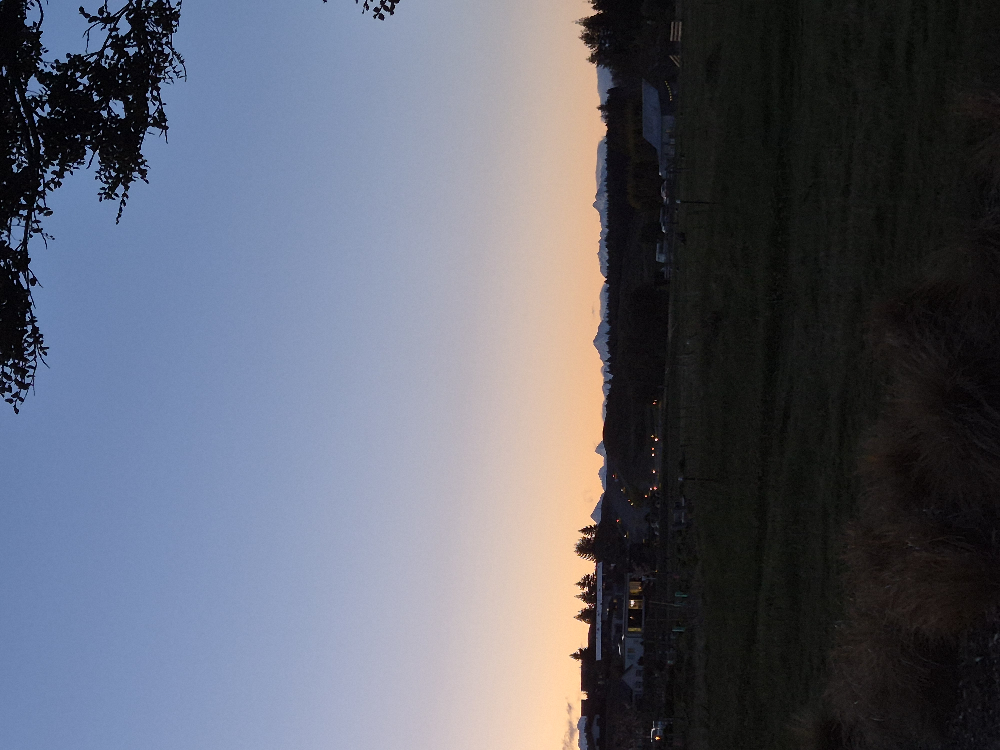
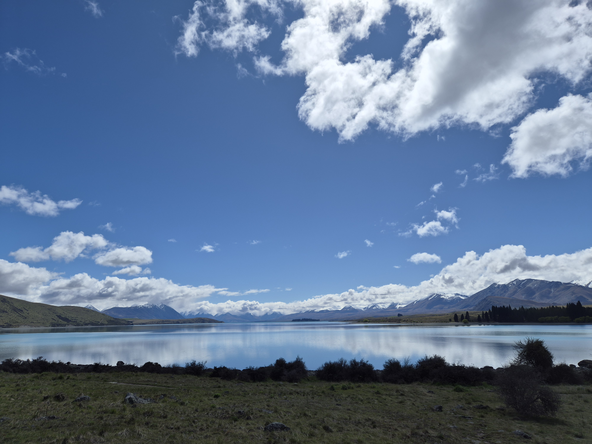
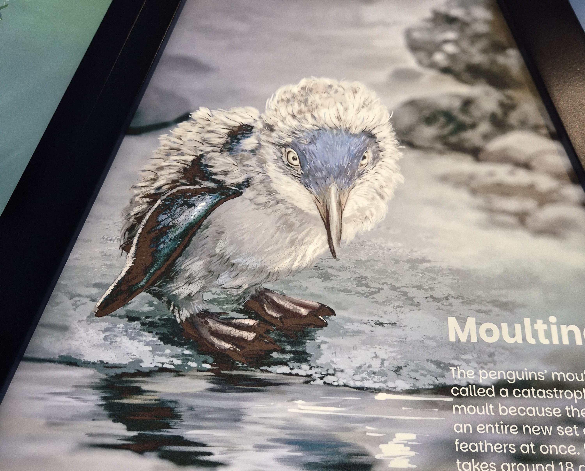
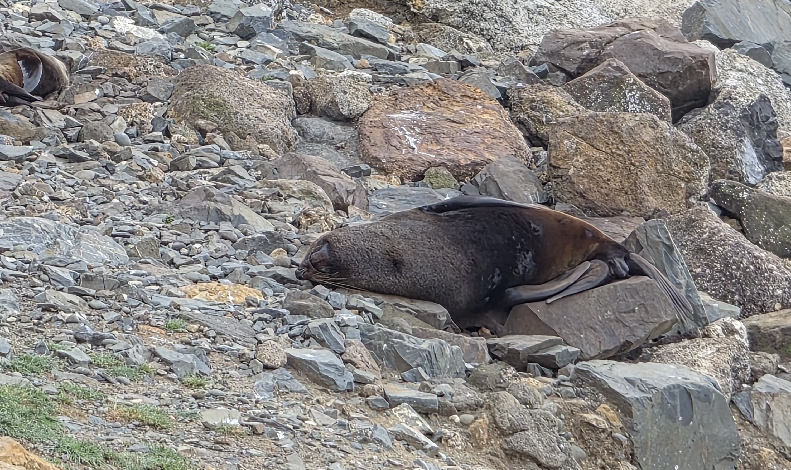

Another fun week or so. I worked a full week and did manage to have 2 clear nights to see the stars as I am supposed to be seeing them. It was very beautiful, well worth the trip over here. Petting zoo had a llama and its baby.

Got some dinner by the lakeside. It was a burger but without the bun so they gave me extra lettuce. I am currently trying to decide whether to accept gluten or not, I may just have minimal amounts so that I don't lose my gluten digesting enzyme. Anyway, this duck joined me whilst I was eating, and it didn't attack me but it did keep edging forwards so I had to keep shooing it back. Then a man came along and sat at the table and scared it away. Very tasty food, will probably go back there.
 On my day of I went to Oamaru to see the penguins! Did see them in their little nests and even one coming out of the water. There were a few seals sunbathing and once again I think if I could be any animal it would be a seal. I also found out that there used to be giant penguins, like almost human size, during the dinosaur era. I don't know if this was common knowledge but I had never even thought of the possibility of giant penguin, they are really quite scary looking.
 I also got to go to the Tekapo hot springs which was absolutely lovely. If I could go every day I think I would. I did sauna for the first time, and the cold plunge, very theraputic. Unfortunatly one of the pools was under construction so the view of the lake was blocked but I got in for free so was in no mind to complain.